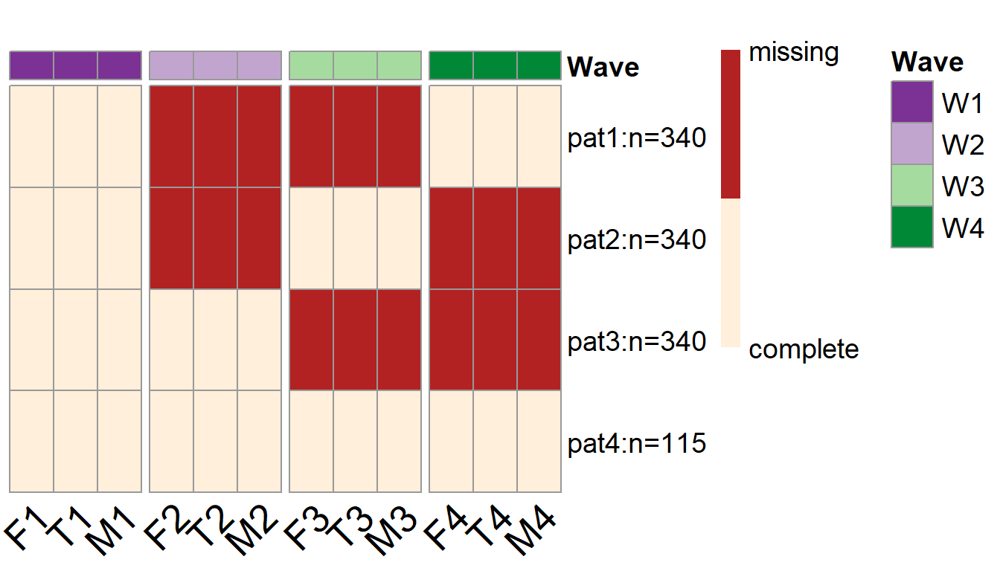

Wave-level PHPM designs
Yi Feng & Gregory R. Hancock
Source:vignettes/old/Wave-Level-PHPM.Rmd
Wave-Level-PHPM.RmdIntroduction
In this vignette we will introduce the wave-level PHPM designs. As the name suggests, in wave-level PHPM designs, the missingness is imposed at the wave level. In those designs, participants are assigned to miss one or more waves of future data collection. If a participant is assigned to miss a specific wave of data collection, the researcher will not collect any data from this participant in that wave.
Wave-level PHPM designs are relatively easy to implement. But there is usually a very limited number of plausible wave-level missing designs, and thus sometimes the search among wave-level PHPM designs may not yield a satisfactory result in terms of statistical power.
Search for wave-level PHPM designs
To search for wave-level PHPM designs using simPM, we only need to specify the methods = "wave" argument when using the simPM() function.
Example
In this hypothetical example, a researcher (Mr. Y) is interested in studying the longitudinal trajectories of children’s externalizing behaviors. The researcher proposed to collect reports from the mother, the father, and the teacher about the child’s daily behaviors (from families with hetero-sexual parents). Once the data collection is completed, the researcher intends to model the externalizing behaviors as a latent variable and investigate its change over time.
Suppose the researcher has proposed a complete-case longitudinal study to collect data for 1,135 children across four waves, each collected at grades 1, 3, 4, and 5. The proposed analysis model is shown below, where the three indicators of the latent construct (externalizing behavior) \(\eta\) across each of the four waves are the responses from the mother (M1-M4), the father (F1-F4), and the teacher (T1-T4), correspondingly.
Although the researcher has initially obtained an external funding to support his longitudinal study, unfortunately, after the first wave of data collection, the funding agency announces a 30% reduction in the remaining funding. Mr. Y wishes to continue the project but he has to deal with the lowered budget constraint. Of course, Mr. Y also wants to keep the scientific rigor and satisfactory statistical power. He thus chooses to use simPM to find a design that yields sufficient power but costs no more than the reduced budget.

A second-order linear LGM
After supplying the population model and the analysis model, we can use the function simPM() to search for an optimal wave-level missing design with the methods = "wave" argument. For more details about the specification of other arguments, please refer to this vignette.
popModel=' EXB1=~1.150*F1+0.836*T1+1*M1 EXB2=~1.150*F2+0.836*T2+1*M2 EXB3=~1.150*F3+0.836*T3+1*M3 EXB4=~1.150*F4+0.836*T4+1*M4 interc=~1*EXB1+1*EXB2+1*EXB3+1*EXB4 slope=~0*EXB1+2*EXB2+3*EXB3+4*EXB4 interc~~-0.244*slope interc~8.289*1 slope~-0.433*1 interc~~18.184*interc slope~~0.249*slope EXB1~~1.084*EXB1 EXB2~~1.777*EXB2 EXB3~~1.457*EXB3 EXB4~~1.700*EXB4 T1~-0.214*1 T2~-0.214*1 T3~-0.214*1 T4~-0.214*1 M1~0*1 M2~0*1 M3~0*1 M4~0*1 F1~-1.136*1 F2~-1.136*1 F3~-1.136*1 F4~-1.136*1 M1~~23.886*M1 F1~~17.737*F1 T1~~55.074*T1 M2~~20.223*M2 F2~~8.941*F2 T2~~66.698*T2 M3~~16.905*M3 F3~~13.922*F3 T3~~61.995*T3 M4~~19.324*M4 F4~~13.410*F4 T4~~71.127*T4 F1~~4.256*F2+7.040*F3+5.737*F4 F2~~5.440*F3+3.590*F4 F3~~6.165*F4 T1~~23.603*T2+24.666*T3+23.168*T4 T2~~35.213*T3+29.648*T4 T3~~33.815*T4 M1~~12.975*M2+11.153*M3+11.683*M4 M2~~12.219*M3+11.332*M4 M3~~11.807*M4 '
analyzeModel=' EXB1=~NA*F1+a*F1+b*T1+1*M1 EXB2=~NA*F2+a*F2+b*T2+1*M2 EXB3=~NA*F3+a*F3+b*T3+1*M3 EXB4=~NA*F4+a*F4+b*T4+1*M4 interc=~1*EXB1+1*EXB2+1*EXB3+1*EXB4 slope=~0*EXB1+2*EXB2+3*EXB3+4*EXB4 interc~~slope interc~1 slope~1 interc~~interc slope~~slope EXB1~~EXB1 EXB2~~EXB2 EXB3~~EXB3 EXB4~~EXB4 F1~c*1 F2~c*1 F3~c*1 F4~c*1 T1~d*1 T2~d*1 T3~d*1 T4~d*1 M1~0*1 M2~0*1 M3~0*1 M4~0*1 F1~~F1 F2~~F2 F3~~F3 F4~~F4 T1~~T1 T2~~T2 T3~~T3 T4~~T4 M1~~M1 M2~~M2 M3~~M3 M4~~M4 F1~~F2+F3+F4 F2~~F3+F4 F3~~F4 T1~~T2+T3+T4 T2~~T3+T4 T3~~T4 M1~~M2+M3+M4 M2~~M3+M4 M3~~M4 '
wave.ex2 <- simPM(popModel = popModel, analyzeModel = analyzeModel, VarNAMES = c("F1","T1","M1","F2","T2","M2", "F3","T3","M3","F4","T4","M4"), Time = 4, Time.complete = 1, k = 3, pc = 0.1, pd = 0, costmx = c(rep(5,3), rep(10,3), rep(15,3)), n = 1135, nreps = 1000, focal.param = c("interc~1", "slope~1", "interc~~interc", "slope~~slope"), complete.wave = NULL, eval.budget = T, rm.budget = 90*1135*0.7, distal.var = NULL, seed = 12345, engine = "l", methods = "wave" #type of PHPM designs under consideration, "wave" indicates wave-level missing )
By running the code above, simPM will map out the possible wave-level PHPM designs and determine whether the cost of each design is within the remaining budget limit. It will run Monte Carlo simulations for the plausible designs that cost less than the remaining amount of funding. Comparisons are made among the plausible designs. The design that yields higher empirical statistical power with regard to the focal parameters will be selected as the optimal wave-level PHPM design.
In this example, there is only one plausible wave-level PHPM design, given we have specified that 10% of the participants will provide complete data over the following waves of data collection.
From the output, we can see that 115 participants are assigned to provide complete data over the future waves of data collection, while the rest of the participants are assigned to one of the three missing data patterns. More specifically, three hundred and fourty participants are randomly picked to NOT provide data in wave 2 and wave 3 (the first row of the plot); another 340 participants are randomly picked to NOT provide data in wave 2 and wave 4 (the second row of the plot); the rest 340 participants are by design to not provide data in wave 3 and wave 4.
This design yields satisfactory statistical power for testing three of the four focal parameters (interc~1, slope~1, and interc~~interc). But the statistical power for testing the focal parameter slope~~slope is only 0.421.
summary(wave.ex2) #> [1] "=================results summary================" #> convergence.rate weakest.param.name weakest.para.power cost.design #> 1 0.702 slope~~slope 0.421 40950 #> miss.waves #> 1 2 #> [1] "=================Optimal design=================" #> convergence.rate weakest.param.name weakest.para.power cost.design #> 1 0.702 slope~~slope 0.421 40950 #> miss.waves #> 1 2 #> [1] "=================Optimal design for focal parameters=================" #> Estimate Average Estimate SD Average SE Power (Not equal 0) #> interc~1 8.2922999 0.18439790 0.18532638 1.000 #> slope~1 -0.4349477 0.03524265 0.03648627 1.000 #> interc~~interc 18.2591912 1.98317441 2.01371609 1.000 #> slope~~slope 0.2514950 0.14609108 0.14303930 0.421 #> Std Est Std Est SD Std Ave SE Average FMI1 SD FMI1 #> interc~1 1.948990 1.108139e-01 0.1131175 0.05958998 0.01523916 #> slope~1 -1.055051 1.095330e+00 7.7855138 0.33198048 0.02445560 #> interc~~interc 1.000000 1.507552e-16 0.0000000 0.40317214 0.03075357 #> slope~~slope 1.000000 1.400756e-16 0.0000000 0.80321992 0.01634524 #> [1] "=================Optimal patterns===============" #> F1 T1 M1 F2 T2 M2 F3 T3 M3 F4 T4 M4 #> 0 0 0 1 1 1 1 1 1 0 0 0 #> 0 0 0 1 1 1 0 0 0 1 1 1 #> 0 0 0 0 0 0 1 1 1 1 1 1 #> completers 0 0 0 0 0 0 0 0 0 0 0 0 #> [1] "=================Optimal probs==================" #> [1] 0.3 0.3 0.3 0.1 #> [1] "=================Optimal ns====================" #> [1] 340 340 340 115
plotPM(wave.ex2)
